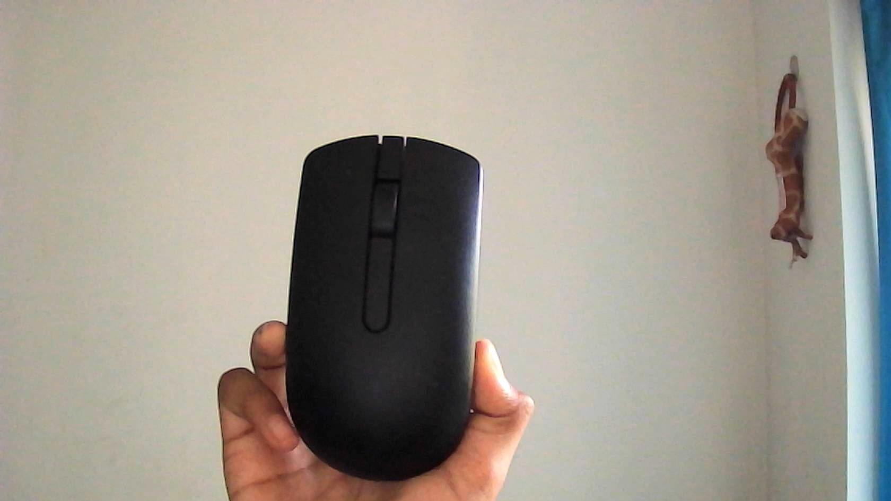
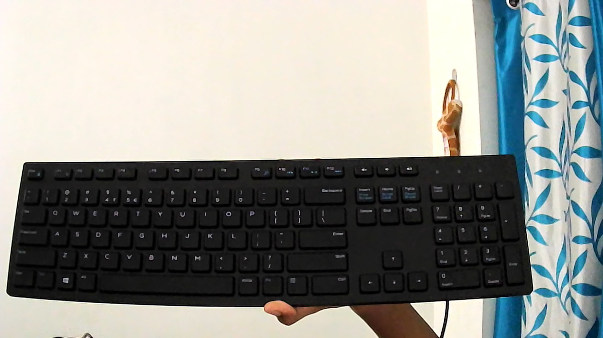
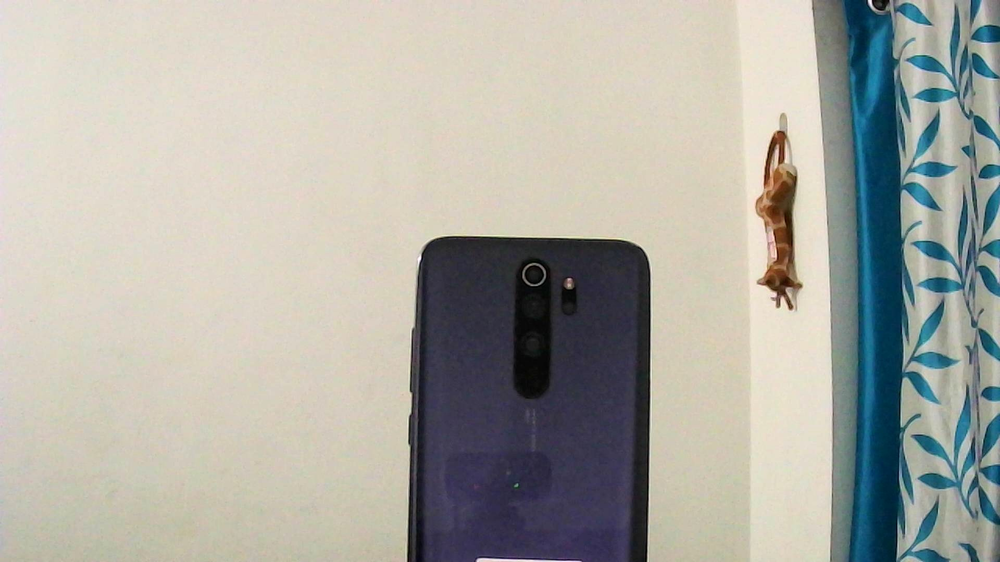

Welcome,
This a Case Study between Google Lens and Mobile Net Image Identification.



Conclusion
Google Lens has outperformed MobileNet by 5 1/2 points. Google Lens is more Accurate Than MobileNet . Google lens has more focus on details which helps to identify the manufacturer and other details of the object. Whereas MobileNet only identifies the objects generally without more specific details.